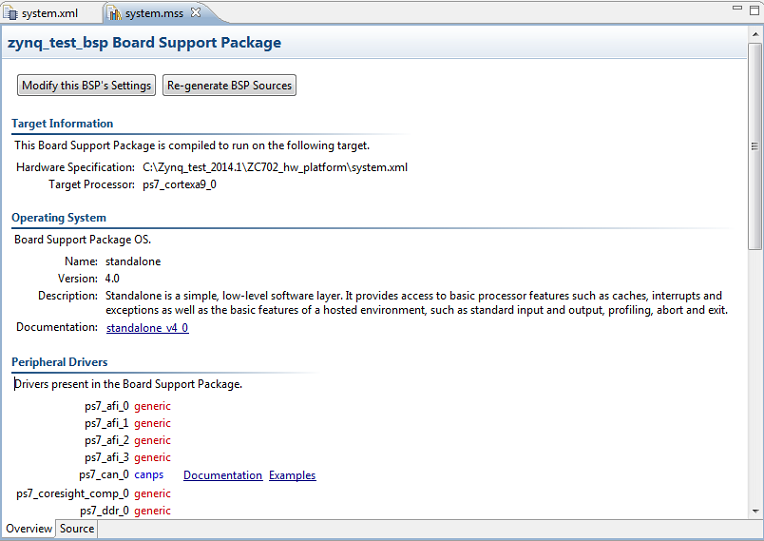

To view a board support package in the MSS Viewer, do the following:
Using the Project Explorer in the C/C++ Perspective, select a BSP project.
Click on the arrow to the left of the BSP name to expand the project tree.
Locate and double-click the MSS file. The MSS Viewer opens.
Click the Overview tab (located on the bottom of the page). Information is shown for
the Standalone BSP, which supports application development within SDK.

Information in the Overview tab includes:
The Target Information section contains the hardware platform
specification file name and target processor.
The Operating System section describes the BSP and includes
a link to documentation.
The Periberals Drivers section lists the drivers present
in the BSP and includes a links to driver documentation.
The Libraries section shows the enabled libraries present in the
BSP, if any.
The MSS viewer displays similar information for a BSP created for external
tools.